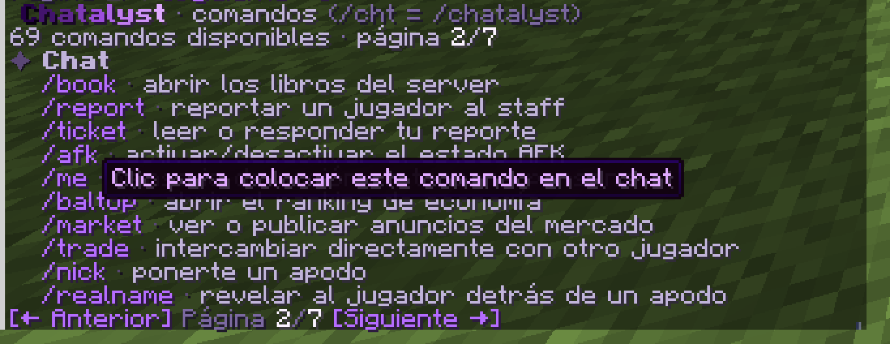

Esta lista se genera sola a partir del plugin, así que siempre coincide con la versión que descargas. Escribe en la caja para filtrarla. /cht es la forma corta de /chatalyst. ¿Buscas los nodos de permiso? Mira Permisos.
En el juego, /cht help enseña por páginas los comandos que puedes usar. Haz clic en uno para ponerlo en tu chat.

Las herramientas del staff como /ban o /freeze no salen en esta tabla: solo se registran mientras la suite de staff está activada. Tus comandos personalizados tampoco aparecen.
| Comando | Alias | Para qué sirve | Permiso |
|---|---|---|---|
/channel/channel [name|list|mute <name>|listen <name>|history [name]|send <name> <msg>|sendas <player> <name> <msg>] | /ch | cambiar de canal de chat | chatalyst.command.channel todos |
/frequency/frequency [NN.NN|off] | /freq /frecuencia | sintonizar la frecuencia del chat de radio | chatalyst.command.frequency todos |
/f/f <message> | enviar un mensaje a tu frecuencia de radio sin salir de tu canal | chatalyst.command.frequency todos | |
/msg/msg <player> <message> | /m /w /tell /whisper | mensaje privado | chatalyst.command.msg todos |
/reply/reply <message> | /r | responder al último MP | chatalyst.command.msg todos |
/ignore/ignore <player> | ignorar a un jugador | chatalyst.command.ignore todos | |
/toggle/toggle [pm|announcements|mentions|joinquit|translate] | activar/desactivar funciones | chatalyst.command.toggle todos | |
/perfil/perfil | /profile | abrir tu perfil (estadísticas, ajustes personales, jugadores bloqueados, atajos) | chatalyst.command.profile todos |
/inbox/inbox <open|spam|friends|friend|accept|deny|send|read|reply|clear> | buzón de correo | chatalyst.command.mail todos | |
/me/me <action> | mensaje de acción en tercera persona | chatalyst.command.me todos | |
/motd/motd [first] | volver a ver el MOTD del server | chatalyst.command.motd todos | |
/chatcolor/chatcolor [color|gradient|reset] | /color | elegir tu color de chat | chatalyst.command.chatcolor todos |
/book/book <name|list|new|edit|save|delete|open> | /books | abrir los libros del server | chatalyst.command.book todos |
/report/report <player> <reason> | reportar un jugador al staff | chatalyst.command.report todos | |
/reports/reports [claim|resolve|reply|info <id>] | /reportlist | gestionar reportes de jugadores | chatalyst.report.manage op |
/ticket/ticket [id] [message] | leer o responder tu reporte | chatalyst.command.ticket todos | |
/afk/afk | activar/desactivar el estado AFK | chatalyst.command.afk todos | |
/baltop/baltop | /moneytop /balancetop /richest | abrir el ranking de economía | chatalyst.command.baltop todos |
/market/market [publish|sell <price>|auction <price> [min]|buy <id>|bid <id> <amount>|cancel <id>|claim|history] | /mercado /mkt | ver o publicar anuncios del mercado | chatalyst.command.market todos |
/trade/trade <player>|accept [player]|deny | /intercambio /intercambiar | intercambiar directamente con otro jugador | chatalyst.command.trade todos |
/realname/realname <nickname> | /rn | revelar al jugador detrás de un apodo | chatalyst.command.realname op |
/nick/nick <nickname|off> | /nickname | ponerte un apodo | chatalyst.nick op |
/itemname/itemname <name|reset> | /iname | renombrar el objeto de tu mano | chatalyst.command.itemname op |
/nickcolor/nickcolor [player] [color|reset] | /nickcolour | pintar tu apodo desde una GUI | chatalyst.nick.color op |
/tag/tag [title|off|admin] or /tag <prefix|suffix> [player] <text|off> | prefijo/sufijo personal | chatalyst.tag op | |
/nametagtitle/nametagtitle <title|iconleft|iconright> [player] <text|off> | /ntitle /nametagicon | poner tu título flotante o los iconos laterales del nametag | chatalyst.nametagtitle op |
/tagcontador/tagcontador <player> <key> [amount] | /tagcounter | sumar (o restar) al contador de títulos de un jugador (requisitos COUNTER) | chatalyst.admin.tags op |
/chatalyst/chatalyst <help [page]|commands [page]|version|reload|emojis|ranks|gui|doctor [discord]|perf|features|permissions [category] [page]|purge <player>|rule <list|toggle <rule>>|region <pos1|pos2|list|add <name>|remove <name>>|storage <status|import [--dry-run|--changed]>|store <status|give <player> <product>>|tebex <gui|status|grant <player> <rank>|revoke <player> <rank>>|sendformat <player> <format> <text>> | /cht /chy /cchat | comando principal de Chatalyst | |
/discord/discord <link|unlink|status> | /discordlink /dclink | vincular tu cuenta de Minecraft con Discord | |
/spy/spy [toggle|all|<player>] | /socialspy | menú de spy granular | |
/players/players | /list /playerlist /jugadores | abrir la lista de jugadores conectados | |
/staffchat/staffchat <message> | /sc /a | enviar un mensaje al chat de staff | chatalyst.channel.staff op |
/support/support <answer <id>|close|status> | /soporte | atender una conversación privada de soporte | |
/mute/mute [-s] <player> [time] [reason] | /mutear /silenciar | mutear a un jugador | |
/unmute/unmute <player> | /desmutear /desilenciar | desmutear a un jugador | |
/say/say <message> | enviar un mensaje formateado del servidor | chatalyst.command.say op | |
/broadcast/broadcast <message> | /bc | difusión rápida (chat/title/bossbar/toast) | chatalyst.command.broadcast op |
/announce/announce | compositor de anuncios (GUI) | chatalyst.command.announce op | |
/formatedit/formatedit <format> | /feditor /editformat | editor de formatos (GUI) | chatalyst.command.editor op |
/clearchat/clearchat | /cc | limpiar el chat | chatalyst.command.clearchat op |
/chatlock/chatlock | /chatmute /mutechat | bloquear/desbloquear el chat | chatalyst.command.chatlock op |
/chatunlock/chatunlock | /chatunmute /unmutechat | desbloquear el chat global | chatalyst.command.chatlock op |
/slowmode/slowmode <seconds|off> | /slow | modo lento del chat | chatalyst.command.slowmode op |
/warnings/warnings <player> [clear] | /warns /warnpoints | puntos de aviso | chatalyst.command.warnings op |
/chatlog/chatlog [player] [count] | /clog | revisar el historial reciente del chat | |
/containerlog/containerlog [player] [count|date] | /contlog /cofres | revisar interacciones con contenedores y mecanismos con coordenadas exactas | |
/itemwatch/itemwatch <scan <player>|alerts> | /dupes /vigilancia | vigilancia de objetos sospechosos - cantidades absurdas, ganancias rápidas y stacks imposibles (posibles dupes) | |
/autoclick/autoclick [player|alerts] | /cps | detector de autoclick - CPS en vivo y regularidad de clics de un jugador, sospechosos recientes | |
/antiexploit/antiexploit [estado|avisos] | /antiexploits /exploits | anti-exploit - sospechosos recientes, estado y alternar alertas | |
/itemaudit/itemaudit <staff> [page] | player <player> [page] | id <id> | hand | recent [page] | alerts | /staffitems | auditoría de objetos del staff - objetos sacados de creativo o dados por comando, quién los recibió y cambios de modo de juego | chatalyst.command.itemaudit op |
/combatlog/combatlog [player...] [count|date] | /pvplog /combate | revisar el PvP - quién golpeó a quién, con qué y quién dio el primer golpe | |
/anonymous/anonymous [on|off] | /anon /anonimo | modo anónimo para streamers - nombre aleatorio ilegible, sin rango/tags y skin de incógnito | chatalyst.command.anonymous op |
/marry/marry <player> | accept | deny | /casarse /matrimonio | proponer matrimonio a otro jugador y casarse (función opcional) | chatalyst.command.marry todos |
/divorce/divorce | /divorciarse /divorciar | poner fin a tu matrimonio | chatalyst.command.marry todos |
/events/events [admin] | /event /eventos | ver los próximos eventos del servidor | chatalyst.command.events todos |